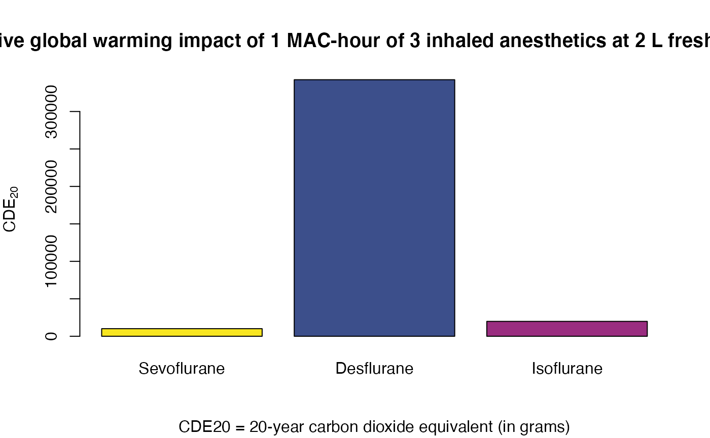

The hypercapnia package offers functions to estimate the global warming potential of volatile anaesthetics based on values described in Ryan and Nielsen (2010).
hypercapnia includes the ianes data with important key facts about frequently used anaesthetics.
library("hypercapnia")
knitr::kable(ianes)| Name | MAC | MW | Density | GWP20 | GWP100 | GWP500 | Unit | Color |
|---|---|---|---|---|---|---|---|---|
| Desflurane | 0.060 | 168.0 | 1.45 | 3714 | 1314 | 398 | 240 | #3c4f8b |
| Isoflurane | 0.012 | 184.5 | 1.49 | 1401 | 429 | 130 | 250 | #9a2d80 |
| Sevoflurane | 0.020 | 200.0 | 1.52 | 349 | 106 | 32 | 250 | #f8e620 |
In the next code snippet we reproduce the Table 2 of Ryan and Nielsen (2010). (The values slightly differ because of different precision and ounding errors).
i <- match(
rep(c("Sevoflurane", "Isoflurane", "Desflurane"), c(1, 3, 3)),
ianes$Name
)
fgf <- c(2, rep(c(0.5, 1, 2), 2))
gph <- gram_per_hour(mass = ianes$MW[i], mac = ianes$MAC[i], fgf = fgf)
cde20 <- cde_gram_per_hour(
mass = ianes$MW[i], mac = ianes$MAC[i], gwp = ianes$GWP20[i], fgf = fgf
)
tbl2 <- data.frame(
name = ianes$Name[i], mac = ianes$MAC[i] * 100, fgf = fgf,
gph = gph, gwp20 = ianes$GWP20[i], cde20 = cde20,
r = cde20 / cde20[1]
)
knitr::kable(
tbl2,
col.names = c(
"Name", "et %", "FGF (L/min)", "Grams/hour", "GWP20", "CDE20 (g/h)",
"Ratio CDE20"
),
caption = paste0(
"Comparison of Global Warming Impact of ",
"Frequently Used Inhaled Anesthetics per MAC-Hour of Use at ",
"Various Fresh Gas Flows; ",
"MAC = minimal alveolar concentration; ",
"et = endtidal;",
"GWP20 = 20-year global warming potential; ",
"CDE20 = 20-year carbon dioxide equivalent."
),
digits = 1
)| Name | et % | FGF (L/min) | Grams/hour | GWP20 | CDE20 (g/h) | Ratio CDE20 |
|---|---|---|---|---|---|---|
| Sevoflurane | 2.0 | 2.0 | 20.0 | 349 | 6964.0 | 1.0 |
| Isoflurane | 1.2 | 0.5 | 2.8 | 1401 | 3868.4 | 0.6 |
| Isoflurane | 1.2 | 1.0 | 5.5 | 1401 | 7736.8 | 1.1 |
| Isoflurane | 1.2 | 2.0 | 11.0 | 1401 | 15473.5 | 2.2 |
| Desflurane | 6.0 | 0.5 | 12.6 | 3714 | 46689.2 | 6.7 |
| Desflurane | 6.0 | 1.0 | 25.1 | 3714 | 93378.4 | 13.4 |
| Desflurane | 6.0 | 2.0 | 50.3 | 3714 | 186756.7 | 26.8 |
In the next code snippet we reproduce the Figure 1 of Ryan and Nielsen (2010).
# order in Ryan2010 Figure 1
o <- c(1, 7, 4)
barplot(
setNames(tbl2$cde20[o], tbl2$name[o]),
col = ianes$Color[match(tbl2$name[o], ianes$Name)],
main = paste0(
"Relative global warming impact of 1 MAC-hour of ",
"3 inhaled anesthetics at 2 L fresh gas flow"
),
ylab = expression(CDE[20]),
sub = "CDE20 = 20-year carbon dioxide equivalent (in grams)"
)
Ryan, Susan M., and Claus J. Nielsen. 2010. “Global Warming Potential of Inhaled Anesthetics.” Anesthesia & Analgesia 111 (1): 92–98. https://doi.org/10.1213/ane.0b013e3181e058d7.